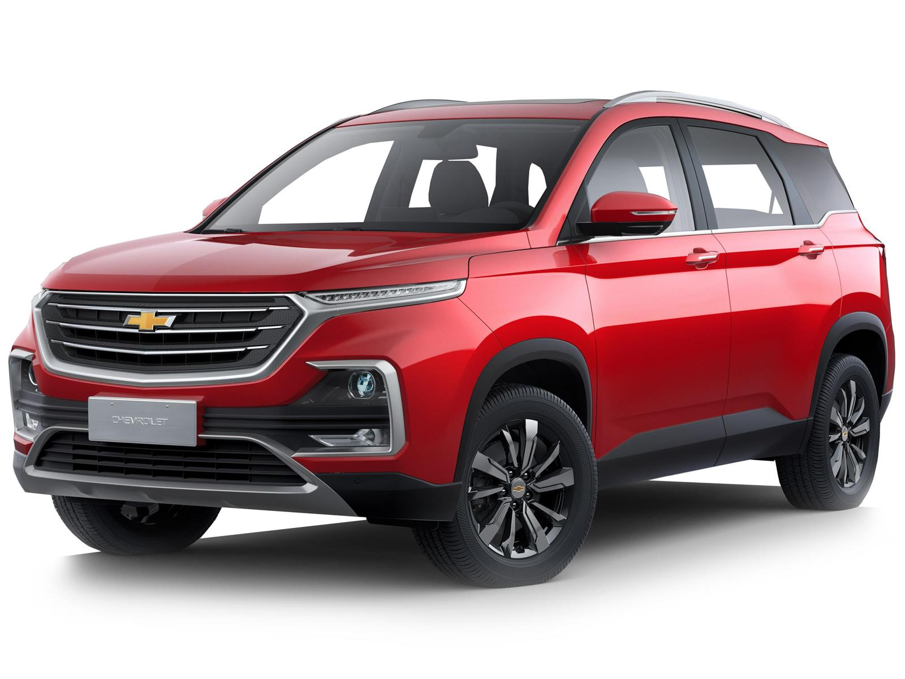
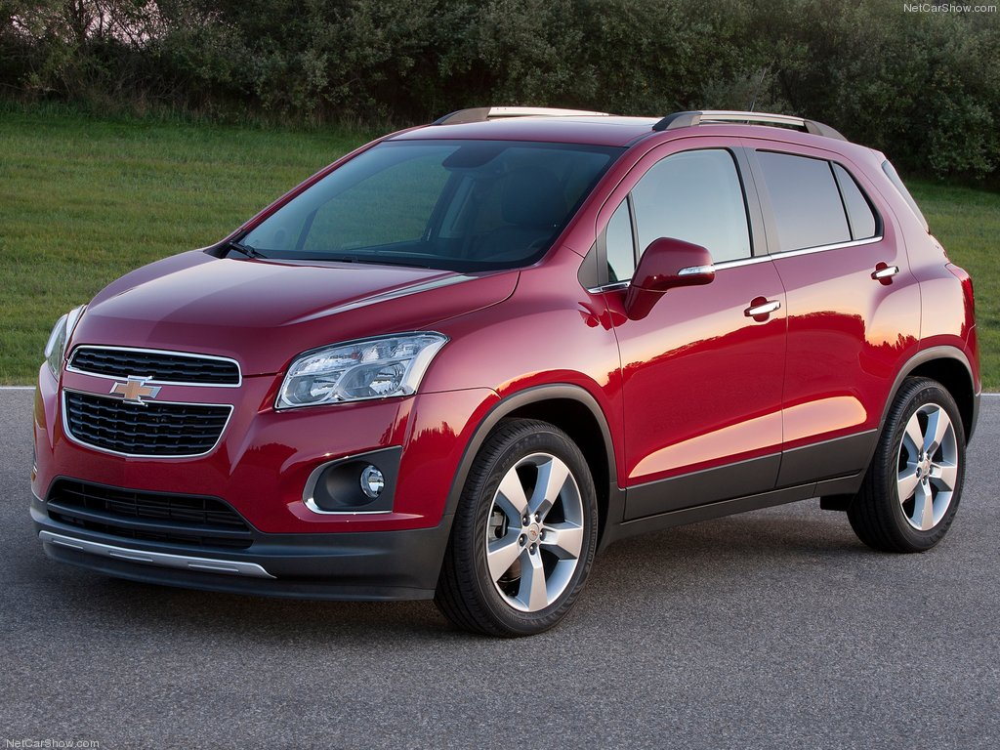
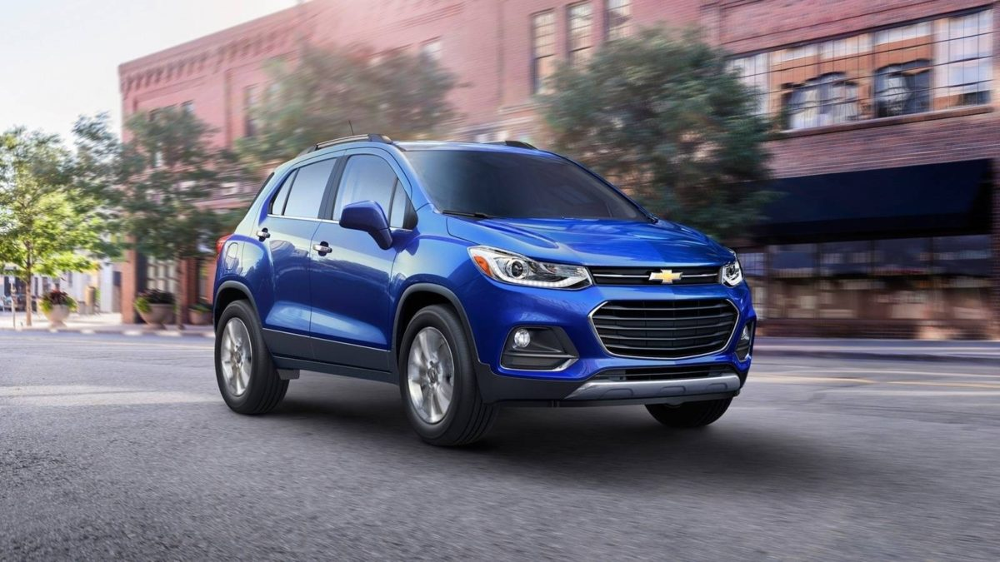

🚗vehículos
📕créditos
📲contactos
Bienvenidos a la mejor empresa de Vehículos
Chevrolet es una de las marcas de automóviles más reconocidas a nivel mundial. Su historia comenzó a principios del siglo XX y ha sido parte integral de la industria automotriz global. Aquí te dejo un resumen de la historia de la empresa: Fundación de Chevrolet (1911) Chevrolet fue fundada en 1911 por el piloto de carreras suizo-estadounidense Louis Chevrolet y el empresario estadounidense William C. Durant. Durant, que anteriormente había sido el fundador de General Motors (GM), buscaba crear una marca que le permitiera competir con las marcas de automóviles existentes en el mercado, como Ford. Louis Chevrolet, un conductor exitoso, fue reclutado para ayudar a diseñar los primeros autos de la marca. El primer modelo de Chevrolet fue el Chevrolet Series C Classic Six, un automóvil de lujo con un motor de seis cilindros. Este modelo fue lanzado en 1911 y tuvo una excelente acogida debido a su rendimiento y calidad. A lo largo de los primeros años, Chevrolet comenzó a ganar popularidad y a expandir su presencia.  Adquisición por General Motors (1918) En 1918, Chevrolet se unió a General Motors (GM), una de las mayores corporaciones automotrices del mundo. Durant compró la mayoría de las acciones de Chevrolet, incorporándola a GM. Esta fusión permitió que Chevrolet se beneficiara de los recursos y la red de distribución de GM, lo que impulsó su crecimiento en el mercado estadounidense y a nivel global. Innovaciones y Éxito Continuo (1930-1950) Durante las décadas siguientes, Chevrolet continuó innovando. En la década de 1930, la marca se destacó por el desarrollo de automóviles más accesibles para el público en general, con modelos como el Chevrolet Master. Durante la Segunda Guerra Mundial, Chevrolet, al igual que muchas otras automotrices, adaptó sus fábricas para producir vehículos militares, lo que también consolidó su nombre.  En la década de 1950, Chevrolet introdujo algunos de sus modelos más icónicos, como el Chevrolet Corvette (1953), un automóvil deportivo que se convertiría en uno de los más emblemáticos de la marca. En la misma época, el Chevrolet Bel Air se convirtió en un símbolo de lujo y estilo en los Estados Unidos. Expansión Global y Diversificación (1960-1980) A lo largo de las décadas de 1960 y 1970, Chevrolet expandió su presencia a nivel mundial, estableciendo fábricas y operaciones en varios países. La marca también diversificó su línea de productos, lanzando modelos como el Chevrolet Camaro y el Chevrolet Impala. Desafíos y Modernización (1990-2000) En la década de 1990 y 2000, Chevrolet enfrentó desafíos económicos y de calidad, como el resto de la industria automotriz. Sin embargo, la marca se modernizó, lanzó vehículos más eficientes en cuanto a consumo de combustible y se centró en la innovación tecnológica, como la introducción de sistemas de información y entretenimiento. En 2009, Chevrolet presentó su modelo híbrido, el Chevrolet Volt, un vehículo eléctrico de autonomía extendida, destacándose en el campo de la sostenibilidad.  Chevrolet Hoy (2020-presente) En la actualidad, Chevrolet continúa siendo uno de los pilares de General Motors, produciendo una amplia gama de vehículos, desde autos compactos hasta camiones y SUVs. La marca sigue innovando con el lanzamiento de vehículos eléctricos como el Chevrolet Bolt EV, posicionándose como una marca clave en el desarrollo de la movilidad sostenible. Legado de Chevrolet A lo largo de su historia, Chevrolet ha sido un referente en la industria automotriz, conocido por su capacidad de innovación, su compromiso con la calidad y la creación de vehículos para todos los gustos y necesidades. Desde sus inicios hasta el día de hoy, Chevrolet sigue siendo un nombre sinónimo de fiabilidad, rendimiento y tecnología avanzada.
Drive the future today